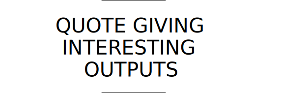

Klopp ist mit seiner Mannschaft der Außenseiter im Duell mit Real Madrid. Doch Liverpool mit seinem famosen Sturm legt furios los. Die Spanier müssen sich noch finden. Verfolgen Sie das Endspiel im Liveticker. Klopp ist mit seiner Mannschaft der Außenseiter im Duell mit Real Madrid. Doch Liverpool mit seinem famosen Sturm legt furios los. Die Spanier müssen sich noch finden. Verfolgen Sie das Endspiel im Liveticker. Klopp ist mit seiner Mannschaft der Außenseiter im Duell mit Real Madrid. Doch Liverpool mit seinem famosen Sturm legt furios los. Die Spanier müssen sich noch finden. Verfolgen Sie das Endspiel im Liveticker. Klopp ist mit seiner Mannschaft der Außenseiter im Duell mit Real Madrid. Doch Liverpool mit seinem famosen Sturm legt furios los. Die Spanier müssen sich noch finden. Verfolgen Sie das Endspiel im Liveticker.
